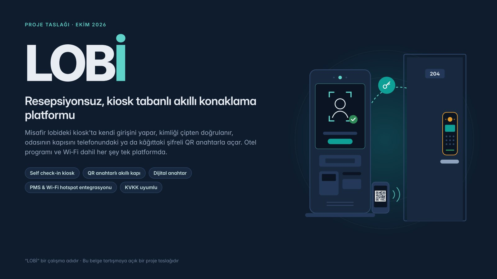

<title>LOBİ Sesli Sunum</title>
<meta name="claude:viewport-fit-sides" content="cover">
<link rel="preconnect" href="https://fonts.googleapis.com">
<link rel="preconnect" href="https://fonts.gstatic.com" crossorigin>
<link rel="stylesheet" href="https://fonts.googleapis.com/css2?family=Figtree:wght@400;500;600;700&family=IBM+Plex+Mono:wght@500&display=swap">
<style>
  /* Sinema düzeni: ortada slayt, altında altyazı, en altta kumanda; tek ve koyu bir görünüm (bilerek). */
  :root {
    color-scheme: dark;
    --bg: #0B1320;
    --panel: #121D2E;
    --line: #22324A;
    --fg: #E9EEF5;
    --muted: #93A3B8;
    --accent: #5FD3CA;
    --accent-ink: #052A27;
    --warn: #F2B35B;
    --font-ui: "Figtree", system-ui, -apple-system, "Segoe UI", Roboto, sans-serif;
    --font-num: "IBM Plex Mono", ui-monospace, "SFMono-Regular", Menlo, monospace;
  }
  * { box-sizing: border-box; }
  html, body { background: var(--bg); color: var(--fg); }
  body { font-family: var(--font-ui); font-size: 15px; line-height: 1.5; -webkit-font-smoothing: antialiased; }
  .wrap {
    max-width: 1120px; margin: 0 auto;
    padding-block: 20px 40px;
    padding-left: max(16px, env(safe-area-inset-left, 0px));
    padding-right: max(16px, env(safe-area-inset-right, 0px));
    display: flex; flex-direction: column; gap: 16px;
  }
  .top { display: flex; align-items: center; justify-content: space-between; gap: 12px; flex-wrap: wrap; }
  .brand { display: flex; align-items: baseline; gap: 12px; flex-wrap: wrap; }
  .logo { font-weight: 700; font-size: 22px; letter-spacing: -0.02em; }
  .logo span { color: var(--accent); }
  .sub { color: var(--muted); font-size: 13.5px; }
  .chip { font-size: 13px; color: var(--muted); border: 1px solid var(--line); background: var(--panel); border-radius: 999px; padding: 5px 12px; display: inline-flex; align-items: center; gap: 8px; max-width: 100%; }
  .chip i { width: 8px; height: 8px; border-radius: 50%; background: var(--muted); flex: none; }
  .chip.ok i { background: var(--accent); }
  .chip.warn { color: var(--warn); border-color: color-mix(in srgb, var(--warn) 40%, var(--line)); }
  .chip.warn i { background: var(--warn); }

  .stage { position: relative; aspect-ratio: 16 / 9; max-width: 100%; border-radius: 10px; overflow: hidden; background: var(--panel); box-shadow: 0 24px 60px -30px rgba(0, 0, 0, 0.8); }
  .stage img { display: block; width: 100%; height: 100%; object-fit: contain; }
  .start { position: absolute; inset: 0; display: grid; place-items: center; background: rgba(6, 12, 22, 0.55); border: 0; cursor: pointer; color: var(--fg); font: inherit; }
  .start span { display: inline-flex; align-items: center; gap: 12px; background: var(--accent); color: var(--accent-ink); font-weight: 700; font-size: 18px; padding: 14px 26px; border-radius: 999px; box-shadow: 0 10px 30px -10px rgba(95, 211, 202, 0.6); }
  .start:hover span, .start:focus-visible span { filter: brightness(1.06); }
  .start:focus-visible { outline: 3px solid var(--accent); outline-offset: -3px; }

  .caption { background: var(--panel); border: 1px solid var(--line); border-radius: 10px; padding: 14px 18px; min-height: 104px; display: flex; flex-direction: column; gap: 4px; }
  .ctitle { font-size: 12px; font-weight: 600; letter-spacing: 0.08em; text-transform: uppercase; color: var(--accent); font-family: var(--font-num); }
  .caption p { margin: 0; font-size: 19px; line-height: 1.5; max-width: 70ch; text-wrap: pretty; }

  .controls { display: flex; align-items: center; gap: 10px; flex-wrap: wrap; }
  .btn { display: inline-flex; align-items: center; justify-content: center; gap: 8px; height: 44px; min-width: 44px; padding: 0 14px; border-radius: 10px; border: 1px solid var(--line); background: var(--panel); color: var(--fg); font: inherit; font-weight: 600; cursor: pointer; }
  .btn:hover { border-color: var(--muted); }
  .btn:focus-visible, select:focus-visible, .seg button:focus-visible { outline: 2px solid var(--accent); outline-offset: 2px; }
  .btn.primary { background: var(--accent); color: var(--accent-ink); border-color: var(--accent); min-width: 132px; }
  .btn svg { width: 18px; height: 18px; fill: currentColor; }
  .count { font-family: var(--font-num); font-size: 14px; color: var(--muted); font-variant-numeric: tabular-nums; padding: 0 4px; }
  .spacer { flex: 1; }
  .field { display: inline-flex; align-items: center; gap: 8px; color: var(--muted); font-size: 13px; }
  select { height: 40px; border-radius: 10px; border: 1px solid var(--line); background: var(--panel); color: var(--fg); font: inherit; font-size: 14px; padding: 0 10px; max-width: 260px; }

  .seg { display: flex; gap: 3px; }
  .seg button { flex: 1; height: 8px; border: 0; padding: 0; border-radius: 3px; background: var(--line); cursor: pointer; }
  .seg button.done { background: color-mix(in srgb, var(--accent) 45%, var(--line)); }
  .seg button.now { background: var(--accent); }

  .help { color: var(--muted); font-size: 13.5px; line-height: 1.55; border-top: 1px solid var(--line); padding-top: 14px; display: grid; gap: 6px; }
  .help b { color: var(--fg); font-weight: 600; }
  .help .warn { color: var(--warn); }

  @media (max-width: 640px) {
    .caption p { font-size: 16.5px; }
    .spacer { display: none; }
    .controls .field { flex: 1 1 100%; }
    .controls .field select { flex: 1; max-width: none; }
    .btn.primary { flex: 1; }
  }
  @media (prefers-reduced-motion: no-preference) {
    .stage img { transition: opacity 0.25s ease; }
    .stage img.fade { opacity: 0.35; }
  }
</style>

<main class="wrap">
  <header class="top">
    <div class="brand"><span class="logo">LOB<span>İ</span></span><span class="sub">Sesli proje sunumu · 33 slayt · yaklaşık 20 dakika</span></div>
    <div class="chip" id="durum"><i></i><span>Türkçe ses aranıyor…</span></div>
  </header>

  <section class="stage">
    
    <button class="start" id="baslat" type="button" aria-label="Sesli sunumu başlat">
      <span><svg viewBox="0 0 24 24" width="20" height="20" aria-hidden="true" fill="currentColor"><path d="M8 5v14l11-7z"/></svg>Sesli sunumu başlat</span>
    </button>
  </section>

  <div class="caption" aria-live="polite">
    <div class="ctitle" id="baslik">Slayt 1 · Kapak</div>
    <p id="altyazi">Başlattığınızda anlatım okunur, slaytlar kendiliğinden ilerler ve okunan cümle burada görünür.</p>
  </div>

  <div class="controls">
    <button class="btn" id="onceki" type="button" aria-label="Önceki slayt"><svg viewBox="0 0 24 24" aria-hidden="true"><path d="M6 6h2v12H6zM9.5 12 18 18V6z"/></svg></button>
    <button class="btn primary" id="oynat" type="button"><svg viewBox="0 0 24 24" aria-hidden="true"><path d="M8 5v14l11-7z"/></svg><span>Başlat</span></button>
    <button class="btn" id="sonraki" type="button" aria-label="Sonraki slayt"><svg viewBox="0 0 24 24" aria-hidden="true"><path d="M16 6h2v12h-2zM6 18l8.5-6L6 6z"/></svg></button>
    <span class="count" id="sayac">01 / 33</span>
    <span class="spacer"></span>
    <label class="field" for="hiz">Hız
      <select id="hiz">
        <option value="0.8">Yavaş (0,8×)</option>
        <option value="0.9" selected>Normal (0,9×)</option>
        <option value="1">Biraz hızlı (1×)</option>
        <option value="1.1">Hızlı (1,1×)</option>
      </select>
    </label>
    <label class="field" for="ses">Ses
      <select id="ses"><option value="">Varsayılan Türkçe ses</option></select>
    </label>
  </div>

  <div class="seg" id="bolumler" aria-label="Slaytlar"></div>

  <div class="help" id="yardim">
    <div><b>En doğal ses için:</b> bilgisayarda Microsoft Edge ile açın (Emel sesi). iPhone ve Mac'te Safari Yelda sesini, Android'de Chrome Google'ın Türkçe sesini kullanır.</div>
    <div><b>Kısayollar:</b> boşluk tuşu başlatır ya da duraklatır, sağ ve sol ok tuşları slayt değiştirir.</div>
    <div><b>Video gerekiyorsa:</b> sunum oynarken ekran kaydı alın (Windows'ta Win + Alt + R, iPhone'da Denetim Merkezi'ndeki Ekran Kaydı).</div>
    <div class="warn" id="uyari" hidden></div>
  </div>
</main>

<script>
const SLAYTLAR = __SLAYTLAR__;

const $ = (id) => document.getElementById(id);
const img = $("slayt"), altyazi = $("altyazi"), baslik = $("baslik"), sayac = $("sayac");
const oynatBtn = $("oynat"), baslatBtn = $("baslat"), hizSec = $("hiz"), sesSec = $("ses");
const destek = "speechSynthesis" in window && "SpeechSynthesisUtterance" in window;
const sentez = destek ? window.speechSynthesis : null;

let i = 0, j = 0, caliyor = false, bitti = false, aktif = null, zamanlayici = null, ses = null, kilit = null;
let turkceSesler = [];

const sakla = (k, v) => { try { localStorage.setItem(k, v); } catch (e) {} };
const oku = (k) => { try { return localStorage.getItem(k); } catch (e) { return null; } };

const ikiHane = (n) => String(n).padStart(2, "0");

const bolumler = $("bolumler");
SLAYTLAR.forEach((s, k) => {
  const b = document.createElement("button");
  b.type = "button";
  b.title = `${s.no}. ${s.baslik}`;
  b.setAttribute("aria-label", `Slayt ${s.no}: ${s.baslik}`);
  b.addEventListener("click", () => git(k));
  bolumler.appendChild(b);
});
SLAYTLAR.forEach((s) => { const on = new Image(); on.src = s.gorsel; });

function ciz() {
  const s = SLAYTLAR[i];
  img.classList.add("fade");
  img.src = s.gorsel;
  img.alt = `Slayt ${s.no}: ${s.baslik}`;
  img.onload = () => img.classList.remove("fade");
  baslik.textContent = `Slayt ${s.no} · ${s.baslik}`;
  sayac.textContent = `${ikiHane(s.no)} / ${SLAYTLAR.length}`;
  [...bolumler.children].forEach((b, k) => {
    b.classList.toggle("now", k === i);
    b.classList.toggle("done", k < i);
  });
  if (!caliyor) altyazi.textContent = s.cumleler[0][0];
}

function dugme() {
  const etiket = caliyor ? "Duraklat" : (bitti ? "Baştan başlat" : (i || j ? "Devam et" : "Başlat"));
  const yol = caliyor ? "M7 5h4v14H7zM13 5h4v14h-4z" : "M8 5v14l11-7z";
  oynatBtn.innerHTML = `<svg viewBox="0 0 24 24" aria-hidden="true"><path d="${yol}"/></svg><span>${etiket}</span>`;
}

function konus() {
  if (!caliyor) return;
  const s = SLAYTLAR[i];
  if (j >= s.cumleler.length) {
    if (i < SLAYTLAR.length - 1) {
      zamanlayici = setTimeout(() => { i++; j = 0; ciz(); konus(); }, 900);
    } else {
      caliyor = false; bitti = true;
      altyazi.textContent = "Sunum bitti. Dinlediğiniz için teşekkürler.";
      kilidiBirak(); dugme();
    }
    return;
  }
  const [goster, metin] = s.cumleler[j];
  altyazi.textContent = goster;
  if (!sentez) return;
  const u = new SpeechSynthesisUtterance(metin);
  u.lang = "tr-TR";
  if (ses) u.voice = ses;
  u.rate = parseFloat(hizSec.value);
  u.pitch = 1;
  u.onend = () => { if (u !== aktif) return; j++; zamanlayici = setTimeout(konus, 280); };
  u.onerror = (e) => {
    if (u !== aktif || e.error === "interrupted" || e.error === "canceled") return;
    j++; zamanlayici = setTimeout(konus, 280);
  };
  aktif = u;
  sentez.speak(u);
}

function sustur() {
  clearTimeout(zamanlayici);
  aktif = null;
  if (sentez) sentez.cancel();
}

function oynat() {
  if (bitti) { i = 0; j = 0; bitti = false; ciz(); }
  caliyor = true;
  baslatBtn.hidden = true;
  sustur();
  kilitAl();
  dugme();
  setTimeout(konus, 80);
}

function duraklat() {
  caliyor = false;
  sustur();
  kilidiBirak();
  dugme();
}

function git(k) {
  if (k < 0 || k >= SLAYTLAR.length) return;
  sustur();
  i = k; j = 0; bitti = false;
  ciz();
  if (caliyor) setTimeout(konus, 80); else dugme();
}

async function kilitAl() {
  try { if ("wakeLock" in navigator) kilit = await navigator.wakeLock.request("screen"); } catch (e) { kilit = null; }
}
function kilidiBirak() { try { if (kilit) kilit.release(); } catch (e) {} kilit = null; }

function puan(v) {
  const ad = v.name;
  let p = 0;
  if (/Emel/i.test(ad)) p += 100;
  else if (/Yelda/i.test(ad)) p += 90;
  else if (/Seda|Filiz|Female|Kadın/i.test(ad)) p += 80;
  else if (/Google/i.test(ad)) p += 60;
  if (/Natural|Neural|Online|Enhanced|Premium|Gelişmiş/i.test(ad)) p += 20;
  if (/Ahmet|Tolga|Cem|Male|Erkek/i.test(ad)) p -= 60;
  return p;
}

function sesleriYukle(son) {
  if (!sentez) return;
  const hepsi = sentez.getVoices();
  turkceSesler = hepsi.filter((v) => /^tr([-_]|$)/i.test(v.lang)).sort((a, b) => puan(b) - puan(a));
  sesSec.innerHTML = "";
  if (!turkceSesler.length) {
    sesSec.innerHTML = '<option value="">Türkçe ses bulunamadı</option>';
    ses = null;
    if (!son && !hepsi.length) return;
    durum("warn", "Bu tarayıcıda Türkçe ses yok");
    uyari("Bu tarayıcıda Türkçe ses bulunamadı; anlatım yanlış dilde okunabilir. Sayfayı bilgisayarda Microsoft Edge ile ya da telefonunuzda açın. Altyazılar her durumda görünür.");
    return;
  }
  turkceSesler.forEach((v, k) => {
    const o = document.createElement("option");
    o.value = String(k);
    o.textContent = v.name.replace(/\s*-\s*Turkish.*$/i, "").replace(/^Microsoft\s+/, "");
    sesSec.appendChild(o);
  });
  const kayitli = oku("lobi-ses");
  const k = Math.max(0, turkceSesler.findIndex((v) => v.name === kayitli));
  sesSec.value = String(k);
  ses = turkceSesler[k];
  durum("ok", "Ses: " + sesSec.options[sesSec.selectedIndex].textContent);
  uyari("");
}

function durum(tur, metin) {
  const c = $("durum");
  c.className = "chip " + tur;
  c.querySelector("span").textContent = metin;
}
function uyari(metin) { const u = $("uyari"); u.textContent = metin; u.hidden = !metin; }

oynatBtn.addEventListener("click", () => (caliyor ? duraklat() : oynat()));
baslatBtn.addEventListener("click", oynat);
$("onceki").addEventListener("click", () => git(i - 1));
$("sonraki").addEventListener("click", () => git(i + 1));
hizSec.addEventListener("change", () => {
  sakla("lobi-hiz", hizSec.value);
  if (caliyor) { sustur(); setTimeout(konus, 80); }
});
sesSec.addEventListener("change", () => {
  ses = turkceSesler[parseInt(sesSec.value, 10)] || null;
  if (ses) { sakla("lobi-ses", ses.name); durum("ok", "Ses: " + sesSec.options[sesSec.selectedIndex].textContent); }
  if (caliyor) { sustur(); setTimeout(konus, 80); }
});
document.addEventListener("keydown", (e) => {
  if (e.target.closest("select")) return;
  if (e.key === " " || e.code === "Space") { e.preventDefault(); caliyor ? duraklat() : oynat(); }
  else if (e.key === "ArrowRight") git(i + 1);
  else if (e.key === "ArrowLeft") git(i - 1);
});
document.addEventListener("visibilitychange", () => { if (document.visibilityState === "visible" && caliyor) kilitAl(); });

const hizKayit = oku("lobi-hiz");
if (hizKayit && [...hizSec.options].some((o) => o.value === hizKayit)) hizSec.value = hizKayit;

if (destek) {
  sesleriYukle();
  sentez.addEventListener?.("voiceschanged", () => sesleriYukle());
  setTimeout(() => { if (!turkceSesler.length) sesleriYukle(true); }, 1500);
} else {
  durum("warn", "Tarayıcı sesli okumayı desteklemiyor");
  uyari("Bu tarayıcı sesli okumayı desteklemiyor. Sayfayı güncel bir Edge, Chrome ya da Safari ile açın. Altyazılar ve slaytlar yine de ilerletilebilir.");
}
ciz();
dugme();
</script>
